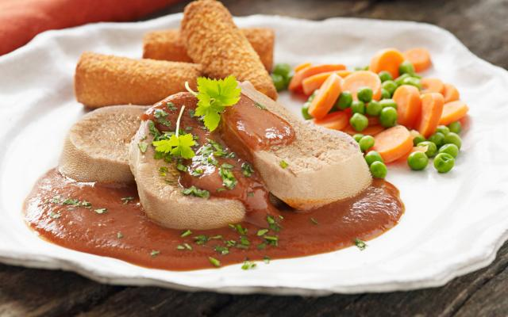

Ossentong

Uitleg
Maderasaus is een saus op basis van demi-glace en madera, al dan niet getomateerd. Het is een saus die goed geserveerd kan worden bij gebakken vlees, zoals biefstuk, in de klassieke keuken vooral bij ossentong.
Ingrediënten
- 1 ossenhaas
- 1 sjalot
- 1 ui
- 1 el tomatenpuree
- 2 dl runderbouillon
- 1 kruidnagel
- 2 wortelen
- 1 prei
- 1 kl boter
- 1 dl madera
Stappen
- Los het zout op in 2 liter water.
- Leg de tong in het pekelwater en zet ten minste 6 uur koel weg. Giet het water af en spoel de tong onder stromend koud water.
- Doe het vlees in een diepe pan en schenk er water bij tot het onder staat. Breng aan de kook en giet dan meteen af. Schenk weer water bij tot het vlees onder staat.
- Prik de kruidnagel in de ui. Snij de prei en de wortel grof . Doe de groenten en het kruidentuiltje bij het vlees. Breng aan de kook.
- Laat, afgedekt, 2.30 uur (eventueel iets langer) zacht koken. De tong is gaar als het vel makkelijk loslaat.
-
Pel de tong terwijl ze nog warm is. Laat ze wat afkoelen, snij ze in plakken. Hou ze warm in een bodempje (gezeefde) bouillon.
- Snipper de wortel en de sjalot fijn. Stoof ze aan in de boter. Doe er het kruidentuiltje en de tomatenpuree bij. Laat heel eventjes uitdampen. Voeg er de madera aan toe. Laat het vocht tot de helft inkoken.
- Doe er de runderfond bij. Laat weer tot de helft inkoken. Zeef de saus en druk de groenten en het kruidentuiltje goed uit. Kruid naar smaak bij met peper en zout.
-
Schik de plakken ossentong op een grote serveerschaal. Lepel er de hete saus bij. Werk af met de gehakte peterselie. Serveer meteen.